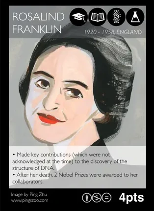
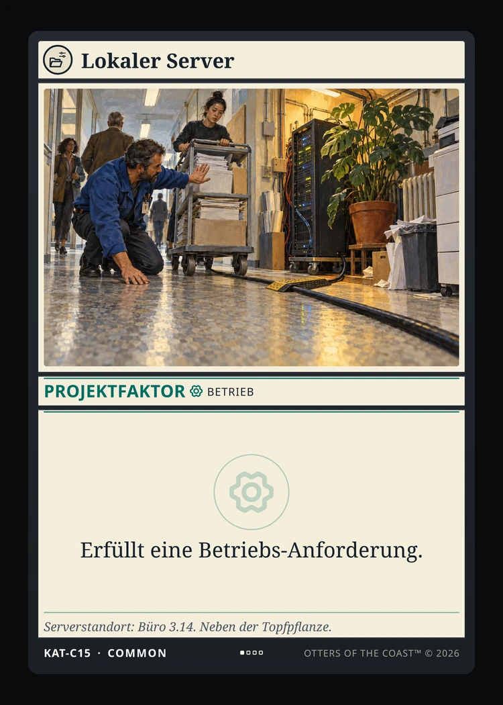
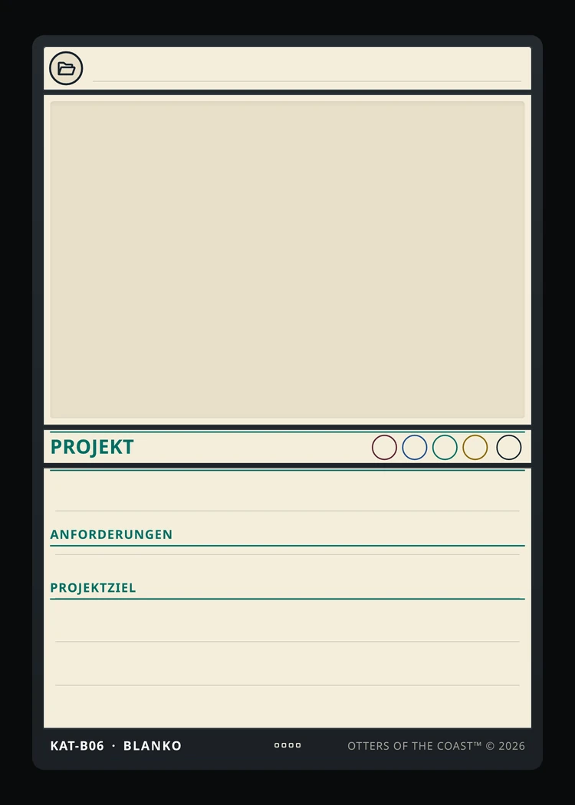
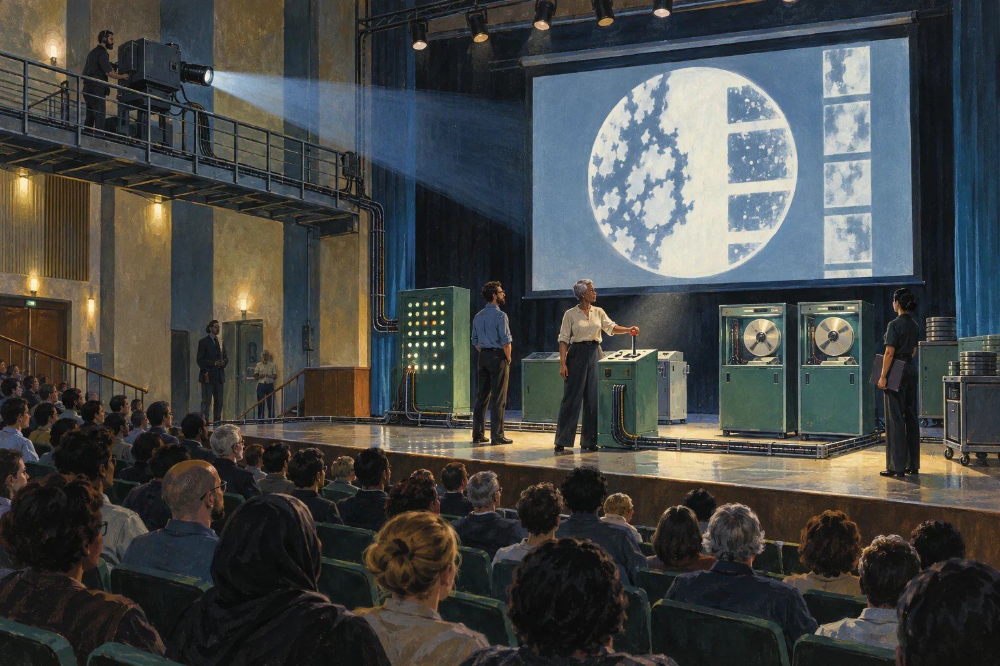

Die Idee war gut.
Nur schon vergeben.
Der Plan
Ein einfaches DH-Katastrophen-Bingo.
Schon eingereicht
„Bingo des Scheiterns“: ein eigenes Kennenlernspiel
mit Gesprächen und gemeinsamer Auswertung.
DH-KATASTROPHEN
BINGO
DatenbankBackup nie
getestet47 MailsDokumentation
im KopfFREIFELD
ScheiternÜbergangs-
lösungKI hat das
vorgeschlagenBefristete
DaueraufgabeLive-Demo
auf Eduroam

Mechanik geerbt.
Alltag erlebt.
Die Spielmechanik basiert auf der PHYLO-Variante „Process of Science“.
Deckvorbilder
- Genetics Society of America
- WWEST Women in Science and Engineering
- Ingenium Women in Science and Engineering
- Forschungsprojekte
- DH-, RDM- und RSE-Projekte
- Passende Ressourcen
- Team · Daten · Betrieb · Methode
- Veränderung & Kooperation
- Ereignisse und gemeinsame Faktoren



Sydney Ang, Genevieve Leduc-Robert, Lu Li, and Sam MacKinnon
Beispielkarten unverändert, CC BY-NC-ND 4.0: GSA/PHYLO (Art: Maki Naro) · WWEST/WISE (Art: Ping Zhu) · Ingenium (nineSixteen Creative)
Alle Originaldecks: phylogame.org/decks · Lizenzen: phylogame.org/licenses
Ein Tisch. Zwei Stapel.
Drei Karten pro Person.
Der Spielsatz: 74 Karten, getrennt nach Projekten und Aktionskarten.

Projekte
Aktionskarten
46 Faktoren + 12 Ereignisse
Offene Ablage
Anfangs leer.
Verbrauchsstapel
Verdeckt. Anfangs leer.
Jede Person zieht
1 Projekt + 2 Aktionskarten
Startperson auslosen. Noch keine Projekte auslegen.
Ein Faktor.
Gemeinsam ans Ziel.
-
Kooperation vereinbaren.
Zwei Personen verbinden je ein aktives Projekt.
-
Einen Faktor gemeinsam nutzen.
Der Server erfüllt bei beiden Projekten die Betriebs-Anforderung.
-
Projekte einzeln abschließen.
Die übrigen Anforderungen erfüllt jede Person selbst.
Jede erhält die Punkte ihres Projekts.
Bob




Kleine Auflage.
Kalkulierte Knappheit.
- Common
- 127
- 28 Motive
- Uncommon
- 61
- 27 Motive
- Rare
- 34
- 18 Motive
- Mythic
- 9
- 9 Motive
- 82 Motive · 231 Karten
- 1 Starterset à 74 Karten
- 13 Booster à 12 Karten · 8 davon mit Foil-Mythic
UNBEFRISTETE STELLEDIE AUFGABE WAR IMMER DAUERHAFT.
DIE STELLE JETZT
AUCH.
Euer Projektalltag
hat noch Potenzial.
-
Projektfaktor
Wählt einen Faktortyp: Team, Daten, Betrieb oder Methode.
-
Ereignis
Beschreibt einen Vorfall und wählt einen passenden Effekt
aus den Regelbausteinen. -
Projekt
Benennt ein Ergebnis und legt zwei bis vier Anforderungen fest.
Jede Anforderung zählt einen Punkt.
Für alle Karten: ein Titel,
ein kurzer Begleittext und eine Bildidee.



12 BLANKO-KARTEN FÜR EURE IDEEN · JE 4 PRO KARTENTYP

Spielen. Forken.
Weiterentwickeln.
Regeln, Kartendaten und Renderer sind offen.
Klont das Projekt. Entwerft eure eigenen Karten.
busfaktor-eins.de
Kartendesigner und Online-Version im Browser.
Spielt allein gegen Bots, mit mehreren an einem Gerät
oder online mit Freunden.
INFORMATIONENbusfaktor-eins.de REPOSITORY
AUF GITHUBtwphl/busfaktor_1CC BY-SA 4.0 · Mit Namensnennung teilen.
Bearbeitungen unter gleicher Lizenz.